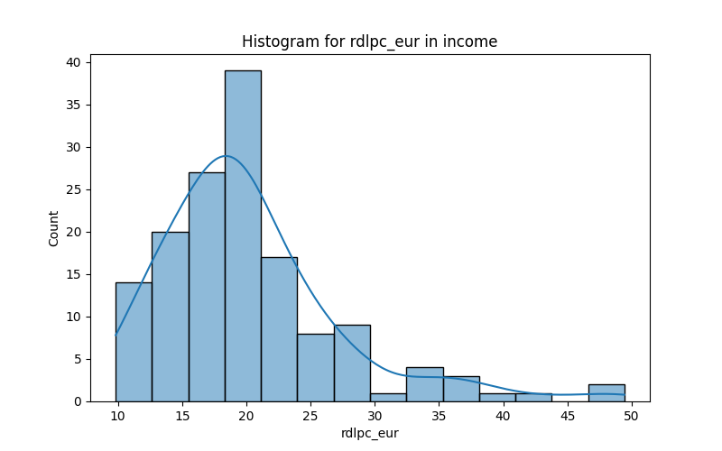

| neighborhood | rdlpc_eur | year | |
|---|---|---|---|
| count | 146 | 146.000000 | 146 |
| unique | 73 | NaN | 2 |
| top | la nova esquerra de l'eixample | NaN | 2020-01-01 00:00:00 |
| freq | 2 | NaN | 73 |
| mean | NaN | 20.250562 | NaN |
| std | NaN | 7.105004 | NaN |
| min | NaN | 9.827000 | NaN |
| 25% | NaN | 15.725500 | NaN |
| 50% | NaN | 18.929500 | NaN |
| 75% | NaN | 23.310250 | NaN |
| max | NaN | 49.436000 | NaN |
| Missing Count | |
|---|---|
| neighborhood | 0 |
| rdlpc_eur | 0 |
| year | 0 |
| rdlpc_eur | |
|---|---|
| 0 | 2956.582 |
| rdlpc_eur | |
|---|---|
| 0 | 50.481076 |
Missing Count: 0
| Count | |
|---|---|
| neighborhood | |
| la nova esquerra de l'eixample | 2 |
| la trinitat vella | 2 |
| la marina de port | 2 |
| la marina del prat vermell | 2 |
| el raval | 2 |
| sant martí de provençals | 2 |
| ciutat meridiana | 2 |
| la guineueta | 2 |
| sants - badal | 2 |
| hostafrancs | 2 |
| la dreta de l'eixample | 2 |
| el besòs i el maresme | 2 |
| el poblenou | 2 |
| sant andreu | 2 |
| can baró | 2 |
| el baix guinardó | 2 |
| les corts | 2 |
| sant gervasi - la bonanova | 2 |
| el guinardó | 2 |
| sant pere, santa caterina i la ribera | 2 |
| el congrés i els indians | 2 |
| verdun | 2 |
| la salut | 2 |
| vallcarca i els penitents | 2 |
| sant gervasi - galvany | 2 |
| sant genís dels agudells | 2 |
| el parc i la llacuna del poblenou | 2 |
| les tres torres | 2 |
| sant antoni | 2 |
| pedralbes | 2 |
| la verneda i la pau | 2 |
| canyelles | 2 |
| l'antiga esquerra de l'eixample | 2 |
| montbau | 2 |
| el poble sec | 2 |
| la vila olímpica del poblenou | 2 |
| el coll | 2 |
| la bordeta | 2 |
| el barri gòtic | 2 |
| la font de la guatlla | 2 |
| la sagrada família | 2 |
| la barceloneta | 2 |
| navas | 2 |
| la sagrera | 2 |
| el bon pastor | 2 |
| baró de viver | 2 |
| la prosperitat | 2 |
| porta | 2 |
| horta | 2 |
| la clota | 2 |
| la teixonera | 2 |
| el carmel | 2 |
| sarrià | 2 |
| la maternitat i sant ramon | 2 |
| el putxet i el farró | 2 |
| la font d'en fargues | 2 |
| la vall d'hebron | 2 |
| vallbona | 2 |
| les roquetes | 2 |
| can peguera | 2 |
| el turó de la peira | 2 |
| sants | 2 |
| provençals del poblenou | 2 |
| diagonal mar i el front marítim del poblenou | 2 |
| la trinitat nova | 2 |
| vilapicina i la torre llobeta | 2 |
| el camp d'en grassot i gràcia nova | 2 |
| la vila de gràcia | 2 |
| el fort pienc | 2 |
| el clot | 2 |
| el camp de l'arpa del clot | 2 |
| torre baró | 2 |
| vallvidrera, el tibidabo i les planes | 2 |
Too many unique values to plot for neighborhood
Missing Count: 0
Sum: 2956.5820000000003
Variance: 50.48107569617383
Missing Count: 0
| Count | |
|---|---|
| year | |
| 2020-01-01 00:00:00 | 73 |
| 2021-01-01 00:00:00 | 73 |